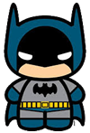

Curriculum vitae de Bruce Wayne
Datos personales
- Nombre completo:Bruce Wayne
- Fecha de nacimiento: 01/05/1939
- Lugar de nacimiento: Gotham City
Formación académica
- 1956-1961
- Universidad del espantapájaros
- Licenciatura en aeronaútica
- 1952-1956
- Secundario Gotham
- Bachiller con especialización en trucos
Experiencia Laboral
- 1975-1985:
- Desocupado
- Sin trabajo porquer se me rompió el batimovil
- 1965-1975:
- Cazavillanos y demás chusma
-
Atrapé a Gatubela a joker a Victor Fries lo dejé porque se me
congeló la capa
- 1962-1965:
- Aprendiz de superhéroes
-
Hice pasantía con Superman. Opté por usar mascara porque no pude
aprender a peinarme el rulo